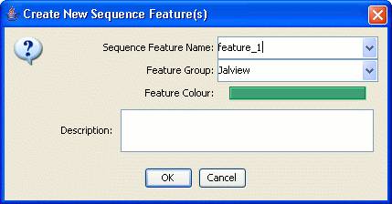

Jalview can create sequence features from the matches of a regular expression search, or from the currently selected area via the "selection→Create sequence feature" entry in the selection area popup menu. In both cases, the Create Features dialog box will then be opened:

Select or enter the attributes for the features being created, and then press OK to create the new features.
Each attribute is described below:
Either give the new features a new name or use the menu to re-use an existing feature name.
Enter a new group name, or re-use an existing group from the pull-down menu.
Keep the existing colour for this feature's name and group, or select the colour box to open a colour chooser to pick a different one.
Enter a description for all the features being created. Each feature defined on a sequence may have its own description that will be displayed in the tooltip for the feature in that region.
Sequence Feature Creation was introduced in Jalview Version 2.2